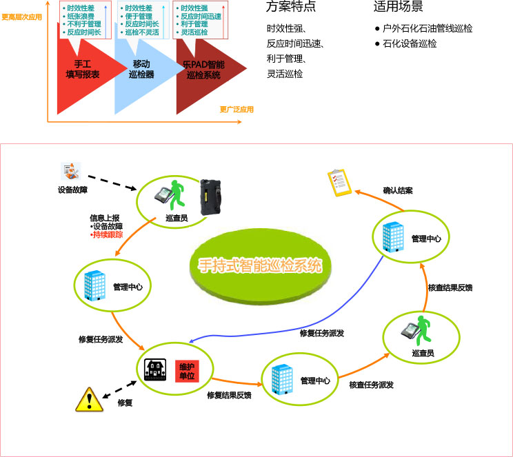

方案特点
- 最完善的IT系统容灾解决方案：两地三中心（同城双活数据中心）
- 最灵活的资源管理调度机制：服务器及存储层的资源整合池化
- 最全面的一体化解决方案：涵盖联想R680四路服务器、联想存储设备等高端产品
适用场景
中石油系统单位新建容灾数据中心、旧数据中心资源整合及改造、异地容灾数据中心建设等
联想云计算平台解决方案
项目背景
中国石油某二级单位随着业务规模的扩大以及科研压力的加大，其现有IT系统已无法满足高效、灵活的业务需求，同时也缺乏统一的资源管理及调度能力，造成了系统资源的浪费。
联想云平台解决方案提供了统一的资源管理调度平台，为前端部门提供包括高性能计算资源、虚拟应用环境以及云桌面资源，有效、快捷的提供服务，保证了系统资源的有效利用。
方案特点
- 统一的资源管理调度平台
- 灵活、高效的资源调配机制
- 弹性、可控的资源服务机制
适用场景
系统二级单位新建数据中心、旧系统中心的整合改造、云计算平台建设
联想油库管理信息系统双机解决方案
项目背景
某大型能源企业下属销售公司主要从事成品油运输、存储和销售等业务。其油库管理信息系统作为信息化建设的一个基础系统，为销售ERP、一次物流、二次物流等应用系统提供油品库存等运营数据，同时需要保证该系统数据的及时、准确和完整，并实现油库信息的集中管理。
联想提供的双机解决方案有效解决了油库单点故障的隐患，保证了油库信息管理系统的业务连续性，并且依托于联想强大的服务能力，保证其遍布于全国32省市自治区的油库管理信息系统顺利上线。
适用场景
二级单位新建或改造的，高可靠性、低成本的应用系统
联想销售ERP灾备系统解决方案
项目背景
某大型能源企业的销售ERP系统是其最核心的ERP系统，部署生产和灾备中心两套系统，可在磁盘阵列层面进行异地的数据同步，实现数据级别灾备。随着销售业务的不断发展，原磁盘阵列的性能以及可用空间均已不能满足现有系统的数据要求。
联想根据销售ERP系统的现状提供基于高端磁盘阵列的容灾扩容方案，实现针对灾备环境下高端阵列的在线扩容以及在线数据迁移，保证了系统可用空间的在线扩展以及在线业务的连续性。
方案特点
- 最完善的灾备系统扩容方案
- 最灵活的资源管理调度机制
适用场景
系统内高可靠性的业务核心系统
联想油田油藏模拟分析HPC解决方案
项目背景
某大型能源企业研究中心，围绕油田勘探和开发两大主线，建立形成了油气勘探、油田开发、三次采油、分析测试、计算机应用等科研、设计、生产体系。为满足油田业务发展的需要，勘探开发研究院亟需一套高性能计算集群满足油藏模拟分析业务的需要。
联想深腾7000 高性能服务器集群凭借在总体架构上的先进性以及能源行业的广泛应用案例，最终成功助力其油藏模拟分析系统。
-
方案特点
架构的先进性、高可扩展性、高可用性
-
适用场景
大规模计算 对网络和图形显示要求高的系统
联想移动管线查勘解决方案
项目背景
移动管线巡检历来是由巡检人员手工通过纸质统计表记录设备信息，巡检周期长、难度大、报表不及时、信息不全、不能连续计量、监测精度低、实时性差。
利用3G网络，联想乐pad 、ThinkPad Tablet 作为智能终端和系统管理平台共同组成实时巡检管理系统，实现动态、静态联动管理相结合，推动中石油巡查管理业务体系由粗放式管理向精细化、数字化转变。
联想加固笔记本测录井系统解决方案
项目背景
某大型油田的地质录井公司海外录井队，在海外石油钻井平台上，要使用笔记本进行钻井数据的收集和计算。在使用过程中，笔记本需要和海事卫星及钻井侦测设备连接，并结合油田自行开发的专业软件。
由于油气勘探工作多在恶劣的自然环境下展开，高低温交变、尘埃、雨淋、盐雾、风沙、冲击、震动、撞击等考验对于普通的笔记本产品来说损耗是非常大的。在重重考验面前，加固笔记本的优势充分显现出来。
方案特点
联想推荐客户使用昭阳加固笔记本，作为该系统的钻井数据的收集和计算终端：
- 具备针对不同地域、气象环境的适应能力（低温、高海拔、风沙环境、沿海高湿度、盐雾）
- 避免工作环境复杂忙碌带来的设备损伤风险（意外跌落、撞击、沾染油污）
- 设备便携易用方便转移

加固笔记本的产品特点
联想ThinkStation专业解决方案
项目背景
某大型能源企业下属研究院是集团业务决策支持和生产技术服务中心、高新技术研发中心，对计算机硬件产品的大规模数据计算、图形显示及系列专业软件应用均有很高的要求。
联想ThinkStation产品以其超稳定品质、强大性能以及与专业软件的良好结合，在其油藏分析、地震解释研究中得以广泛应用。
方案特点
- 具尖端品质－ThinkStation平均故障率低于Dell27%低于HP17%－TBR统计数据
- 强大性能－ThinkStation D30是业界唯一可以支持内置5块3.5寸硬盘的高性能工作站
- 在ThinkStation平台已上完成了多种整体解决方案的测试与认证－Maximus GPU加速方案等
ThinkStation为众多油田技术软件提供最优化硬件基础架构
- Landmark－DecisionSpace R5000, GeoProbe
- Schlumberger－GeoFrame, GeoViz, Petrel
- Paradigm－Paradigm Suite (EPOS, GOCAD, SKUA)
- GeoTeric (ffa) －SVI Pro,SEA 3D
- Dynamic Graphics－EarthVision, CoViz4D
- IHS－Kingdom
- Roxar－RMS
- Transform－TerraSuite
- TerraSpark－Insight Earth